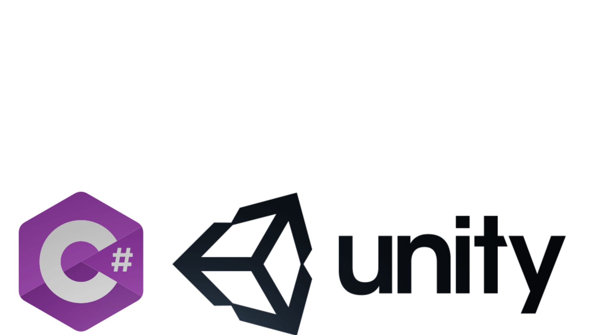

GAMEDEV 
Jako doświadczony twórca gier, posiadam umiejętności w zakresie silnika Unity i stworzyłem liczne modele 3D, elementy gry oraz animacje, które zachwyciły publiczność na całym świecie. Cenię sobie pisanie czystego i wydajnego kodu, który zapewnia płynne doświadczenie dla graczy. Zawsze uczę się i eksploruję nowe techniki i technologie, aby doskonalić swoje umiejętności i być na czele branży. Jako twórca gier pasjonuję się tworzeniem gier, które dostarczają emocjonujących i niezapomnianych doświadczeń dla graczy. Stworzyłem gry na PC oraz strony internetowe. Mam również doświadczenie w tworzeniu animacji do moich gier, które mogą być wykorzystane w celach marketingowych i generowania zainteresowania nadchodzącymi premierami. Wierzę, że dbałość o szczegóły jest kluczem do tworzenia udanych gier i pracuję, aby upewnić się, że każdy aspekt moich gier, od oprawy graficznej do rozgrywki, jest dopracowany i angażujący. Ogólnie rzecz biorąc, jestem pasjonującym i oddanym twórcą gier, który kocha dreszczyk emocji związany z tworzeniem wciągających i ekscytujących doświadczeń w grach. Jeśli szukasz utalentowanego i zdolnego dewelopera, który może ożywić Twoją wizję i stworzyć gry, które zachwycą graczy, nie szukaj dalej. Jestem podekscytowany możliwością wniesienia moich umiejętności i wiedzy do Twojego kolejnego projektu.
As an experienced game developer, I am highly skilled in the Unity game engine and have created numerous 3D models, game assets, and animations that have captivated audiences around the world. I pride myself on writing clean, efficient code that delivers a seamless gaming experience for players. I am always learning and exploring new techniques and technologies to improve my skills and stay at the forefront of the industry. As a game developer, I am passionate about creating games that deliver exciting and memorable experiences for players. I have developed games for PS and websites. I also have experience creating animations for my games, which can be used for marketing purposes and to generate interest in upcoming releases. I believe that attention to detail is key to creating successful games, and I work tirelessly to ensure that every aspect of my games, from the cover to the gameplay, is polished and engaging. Overall, I am a passionate and dedicated game developer who loves the thrill of creating immersive and exciting gaming experiences.
733743446
szymonglowacki321@gmail.com